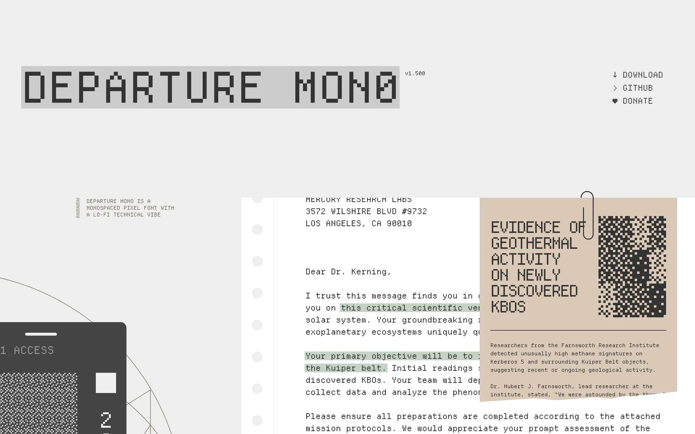

Departure Mono
- Промо-сайт
- Личные сайты и портфолио
- Дизайнер
- Дизайнерам
- Разработчикам
- Ретро
- Утилитарный техно
- Минимализм
- Светлая тема
- Нейтральный фон
- Встроенная игра
- Микроанимации
- p5.js
- Google Analytics 4
- Английский язык
- Действующий сайт

Что это
Сайт моноширинного пиксельного шрифта Departure Mono от Хелены Чжан. Вместо обычной страницы-презентации — досье из писем, машинных распечаток и прикреплённых карточек, где сам шрифт показывает свой характер. В футере спрятана мини-игра DEPARKANOID. Вдохновляющий сайт моноширинного пиксельного шрифта, который умело подчёркивает его технологичную эстетику. В футере сайта — приятный бонус в виде мини-игры.
Что смотреть в первую очередь
Смотреть, как шрифт работает в письме-досье, и сыграть в DEPARKANOID в футере.
Приёмы
- Встроенная игра
- Микроанимации
Интересные факты
- Заголовок набран гигантскими пиксельными буквами на серой плашке; рядом — версия v1.500 и ссылки DOWNLOAD, GITHUB, DONATE.
- Страница выглядит как научное досье: письмо из Mercury Research Labs, прикреплённая карточка «Evidence of geothermal activity on newly discovered KBOS» и панель доступа к компьютеру.
- Сам шрифт — главный герой: письмо, подписи и мелкие детали набраны Departure Mono, поэтому видно, как он работает в реальном тексте.
- В футере — мини-игра DEPARKANOID на p5.js: отдельная секция с canvas, управление клавиатурой и мышью.
- Шрифт сделан Хеленой Чжан и открыт по лицензии SIL OFL; на сайте есть скачивание, GitHub и донат.
- Собрано как небольшое приложение с p5.js 1.10 и Google Analytics 4.
Паспорт
- Домен
- departuremono.com
- Тип сайта
- Промо-сайт
- Категории
- Личные сайты и портфолио
- Подкатегории
- Дизайнер
- Для кого
- Дизайнерам, Разработчикам
- Стиль
- Ретро, Утилитарный техно, Минимализм
- Язык
- Английский
- Страна
- не указано
- Автор
- Хелена Чжан
- Год
- не указано
- Добавлен в коллекцию
- 21.11.2026
Палитра
-
#F3F3F3— 73% кадра -
#D3CABF— 16% кадра -
#3F3F3F— 6% кадра -
#86817C— 2% кадра -
#A6A39C— 2% кадра
- Режим
- Светлая
- Цвет фона
- Нейтральный
Технологии
- p5.js
- Google Analytics 4